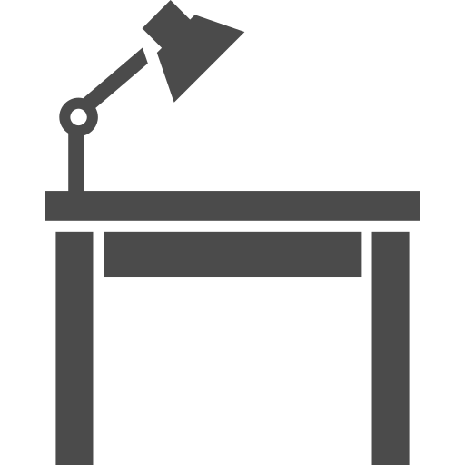

資格取得者がマンツーマンでサポート
直近１年以内の資格取得者が、あなたの勉強をマンツーマンでサポートします
サービス特徴
直近1年以内での合格者のみ
直近合格者なので、知識・試験対策・ノウハウが新鮮
チューターを選択できる
年齢・勉強法・利用テキストなどから、あなたに合ったチューターを選択できる
マンツーマンサポート
専属チューターがあなたの勉強計画、質問への回答などマンツーマンでサポート
オンラインサポート
専属チューターと週１回、テレビ電話にて不明点の質問、悩みなど何でも相談できる
勉強のみに集中
諸々の不安、悩みなどを感じる事なく勉強のみに集中できる
投資分を回収
資格合格後、チューター登録を行うことで、資格試験への投資を回収できる
サービスの流れ
Step1
チューターの勉強方法や試験対策ノウハウなどから自分に合うチューターを選択
Step2
チューターとの面談（テレビ電話）を実施し、チューターの人柄を確認

Step3
チューターと一緒に合格に向けて勉強。不明点はいつでも専属チューターへ質問可能。週1回、50分の面談で勉強進捗など全面サポート
登録フォーム
チューター登録希望の方はこちらへ
チューターを探したい方はこちらへ（5月リリース予定）
チューターがいることのメリット
Aさん
勉強しようと思っても、どのテキストが良いのか、どう勉強を進めれば良いか分からない。ネット上の情報は信用できる分からないし。
Trackersは、合格証明書の確認を徹底しています。合格体験談しか掲載されていないので安心です。このサイト内で合格に必要な情報は全て揃います
Trackers
Bさん
勉強を続けるモチベーション管理が凄い大変で、結局、勉強辞めちゃうんだよね。仕事も忙しいし。
週１回の面談であなたのモチベーションをチューターが全力で支えます。専属なので、あなたの状況などを踏まえ最適な方法を一緒に見つけていきます。
Trackers
Cさん
資格って、それを活かして仕事できるか分からないから合格しても「時間」と「お金」がもったいないと思っちゃうんだよね。
合格すれば、チューターとしてぜひ本サービスに登録下さい。あなたの勉強を支えてくれたチューターのように、今度はあなたがチューターとして後輩達を支えていく仕事をしてください。
Trackers
会社情報
利用規約
特定商取引法に基づく表示
個人情報取り扱いについて
運営会社
お問い合わせ